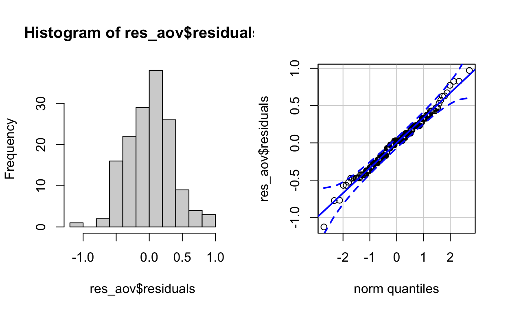
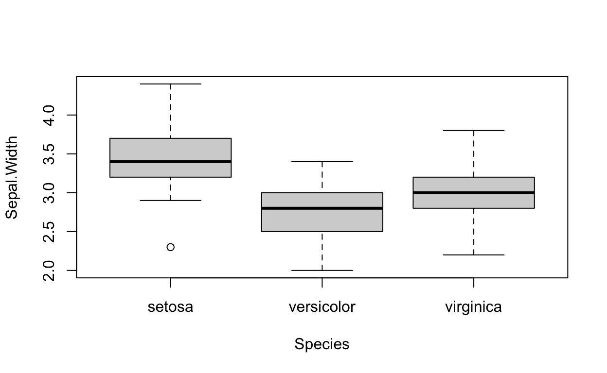
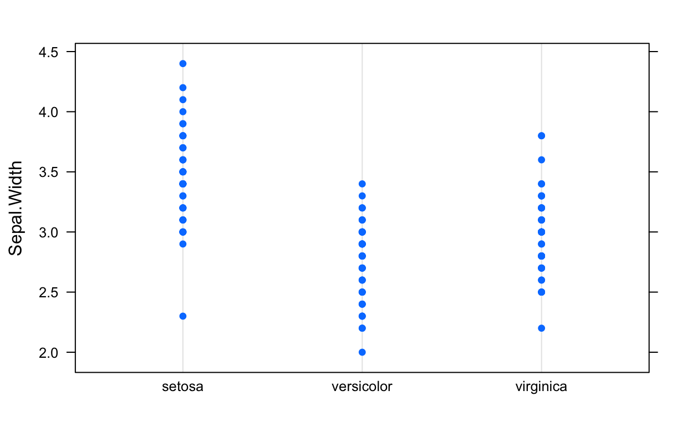
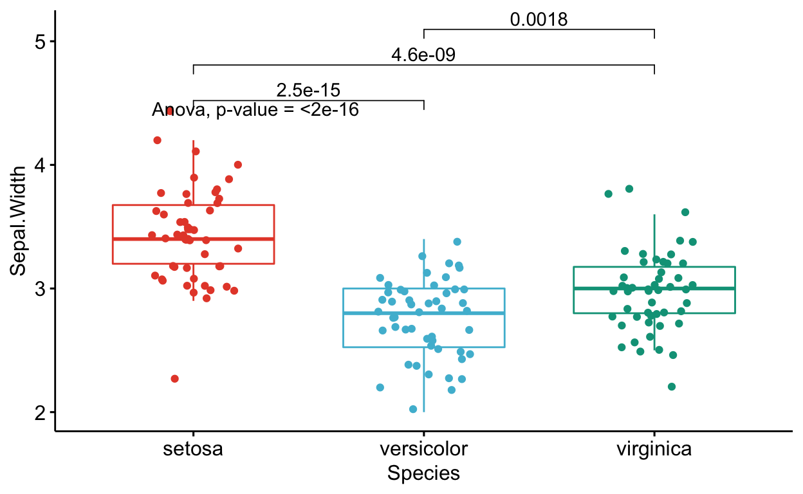
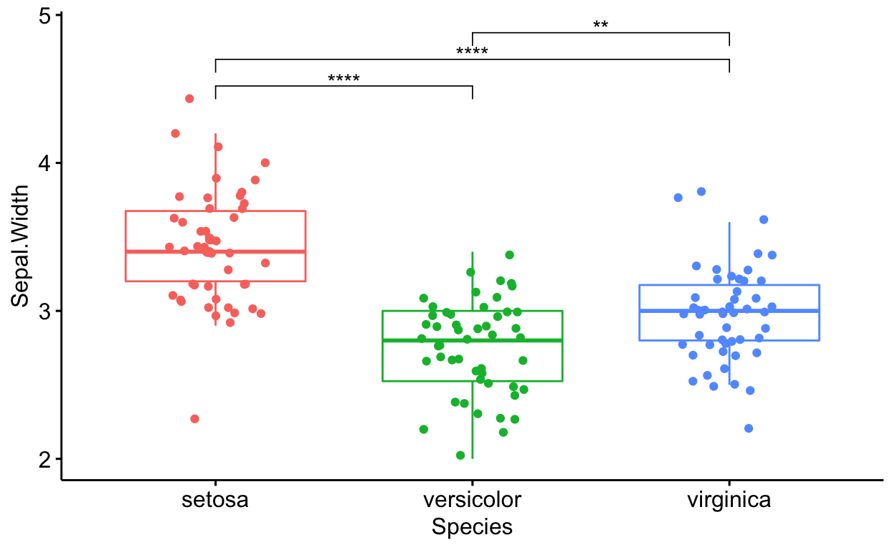

La figura de prueba de promedios de TukeyHSD es una buena opción, ya que incluye p-valor del ANVA y de la comparación de medias entre tratamientos.
El análisis de varianza es una prueba estadística para determinar si dos o más medias poblacionales son diferentes entre si. En otras palabras, se usa para comparar dos o más grupos para ver si son significativamente diferentes.
En el resto del post lo comentaremos desde un punto de vista más práctico y en particular abordaremos los siguientes puntos:
El dato que se utilizará es iris, que se encuentra en la base de datos de R. Estos datos como tratamientos tienen tres especies (setosa, versicolor y virginica) y cuatro variables (Sepal.Length, Sepal.Width, Petal.Length y Petal.Width) cuantitativas
La librería de easyanova es un paquete para realizar análisis de experimentos agrícolas y animales. Las funciones de esta librería son fáciles de usar. Realiza análisis en varios diseños, con datos balanceados y no balanceados.
Salida de datos a utilizar:
#datos
tibble(iris)
# A tibble: 150 x 5
Sepal.Length Sepal.Width Petal.Length Petal.Width Species
<dbl> <dbl> <dbl> <dbl> <fct>
1 5.1 3.5 1.4 0.2 setosa
2 4.9 3 1.4 0.2 setosa
3 4.7 3.2 1.3 0.2 setosa
4 4.6 3.1 1.5 0.2 setosa
5 5 3.6 1.4 0.2 setosa
6 5.4 3.9 1.7 0.4 setosa
7 4.6 3.4 1.4 0.3 setosa
8 5 3.4 1.5 0.2 setosa
9 4.4 2.9 1.4 0.2 setosa
10 4.9 3.1 1.5 0.1 setosa
# … with 140 more rowsComo se mencionó en la introducción, el ANVA se usa para comparar grupos (en la práctica, 3 o más grupos). De manera más general, se utiliza para:
Como ocurre con muchas pruebas estadísticas, hay algunas suposiciones que deben cumplirse para poder interpretar los resultados. Cuando no se cumplen uno o varios supuestos, aunque técnicamente es posible realizar estas pruebas, sería incorrecto interpretar los resultados y confiar en las conclusiones.
Las variables dependientes Sepal.Length, Sepal.Width, Petal.Length y Petal.Width es una variable cuantitativa y la variable independiente Species es cualitativa (con 3 niveles correspondientes a las 3 especies). Así que tenemos una combinación de los dos tipos de variables y se cumple este supuesto.
Se asume la independencia de las observaciones ya que los datos se han recopilado de una parte de la población seleccionada al azar y las mediciones dentro y entre las 3 muestras no están relacionadas.
El supuesto de independencia se verifica con mayor frecuencia con base en el diseño del experimento y en el buen control de las condiciones experimentales, como es el caso aquí. Sin embargo, si realmente desea probarlo de manera más formal, puede probarlo mediante una prueba estadística: la prueba de Durbin-Watson (en R: durbinWatsonTest(res_lm) donde res_lm es un modelo lineal). La hipótesis nula de esta prueba especifica un coeficiente de autocorrelación = 0, mientras que la hipótesis alternativa especifica un coeficiente de autocorrelación ≠ 0.
Recuerde que la normalidad de los residuos se puede probar visualmente mediante un histograma y un gráfico QQ, y/o formalmente mediante una prueba de normalidad (prueba de Shapiro-Wilk, por ejemplo).
Antes de verificar el supuesto de normalidad, primero debemos calcular el ANVA. Luego guardamos los resultados en res_aov:
res_aov <- aov(Sepal.Width ~ Species,
data = iris
)
Ahora podemos comprobar la normalidad visualmente:
par(mfrow = c(1, 2)) # combine plots
# histogram
hist(res_aov$residuals)
# QQ-plot
qqPlot(res_aov$residuals,
id = FALSE # id = FALSE to remove point identification
)

A partir del histograma y el gráfico QQ anteriores, ya podemos ver que el supuesto de normalidad parece cumplirse. De hecho, el histograma forma aproximadamente una curva de campana, lo que indica que los residuos siguen una distribución normal. Además, los puntos en las gráficas QQ siguen aproximadamente la línea recta y la mayoría de ellos están dentro de las bandas de confianza, lo que también indica que los residuos siguen aproximadamente una distribución normal.
Algunos investigadores se detienen aquí y asumen que se cumple la normalidad, mientras que otros también prueban la suposición a través de una prueba estadística formal. Es su elección probarlo (i) solo visualmente, (ii) solo a través de una prueba de normalidad, o (iii) tanto visualmente como a través de una prueba de normalidad. Sin embargo, tenga en cuenta los dos puntos siguientes:
- ANVA es bastante robusto a pequeñas desviaciones de la normalidad. Esto significa que no es un problema (desde la perspectiva de la interpretación de los resultados de ANVA) si un pequeño número de puntos se desvía ligeramente de la normalidad,
- Las pruebas de normalidad son a veces bastante conservadoras, lo que significa que la hipótesis nula de normalidad puede rechazarse debido a una desviación limitada de la normalidad. Este es especialmente el caso con muestras grandes, ya que la potencia de la prueba aumenta con el tamaño de la muestra.
En la práctica, se tiende a preferir el (i) enfoque visual solamente, pero nuevamente, esto es una cuestión de elección personal y también depende del contexto del análisis. Tambien, puede utilizar la prueba de Shapiro-Wilk o la prueba de Kolmogorov-Smirnov, entre otras.
Suponiendo que los residuos siguen una distribución normal, ahora es el momento de comprobar si las varianzas son iguales entre especies o no. El resultado tendrá un impacto en si usamos el ANVA o la prueba de Welch.
Esto se puede verificar nuevamente visualmente, a través de una gráfica de caja o gráfica de puntos, o más formalmente a través de una prueba estadística (la prueba de Levene, entre otras).
Visualmente tenemos:
# Boxplot
boxplot(Sepal.Width ~ Species,
data = iris
)

# Dotplot
dotplot(Sepal.Width ~ Species,
data = iris
)

Tanto la gráfica de boxplot como la gráfica de puntos muestran una variación similar para las diferentes especies. En el boxplot, esto se puede ver por el hecho de que las cajas y los bigotes tienen un tamaño comparable para todas las especies. Hay un par de valores atípicos como lo muestran los puntos fuera de los bigotes, pero esto no cambia el hecho de que la dispersión es más o menos la misma entre las diferentes especies.
En la gráfica de puntos, esto se puede ver por el hecho de que los puntos para las 3 especies tienen más o menos el mismo rango, un signo de la dispersión y, por lo tanto, la varianza es similar.
Al igual que el supuesto de normalidad, si cree que el enfoque visual no es suficiente, puede probar formalmente la igualdad de las varianzas con una prueba de Levene o de Bartlett. Observe que la prueba de Levene es menos sensible a las desviaciones de la distribución normal que la prueba de Bartlett.
Las hipótesis nula y alternativa para ambas pruebas son:
En R, la prueba de Levene se puede realizar gracias a la función leveneTest() del paquete {car}:
# Levene's test
leveneTest(Sepal.Width ~ Species,
data = iris
)
Levene's Test for Homogeneity of Variance (center = median)
Df F value Pr(>F)
group 2 0.5902 0.5555
147 Siendo el p-valor mayor que el nivel de significancia de 0.05, no rechazamos la hipótesis nula, por lo que no podemos rechazar la hipótesis de que las varianzas son iguales entre especies (p-valor = 0.556).
Este resultado también está en línea con el enfoque visual, por lo que la homogeneidad de las variaciones se cumple tanto visual como formalmente.
El ANVA puede ayudarnos a hacer inferencias sobre la población dada la muestra en cuestión y ayudarnos a responder la pregunta de investigación “¿Existe diferencia en ancho de sépalo para las 3 especies?”.
El ANVA en R se puede realizar de varias formas, de las cuales tres se presentan a continuación:
a). Con la función oneway.test():
# primer metodo:
oneway.test(Sepal.Width ~ Species,
data = iris,
var.equal = TRUE # asumiendo varianzas iguales
)
One-way analysis of means
data: Sepal.Width and Species
F = 49.16, num df = 2, denom df = 147, p-value < 2.2e-16b). Con las funciones de summary() y aov():
Df Sum Sq Mean Sq F value Pr(>F)
Species 2 11.35 5.672 49.16 <2e-16 ***
Residuals 147 16.96 0.115
---
Signif. codes: 0 '***' 0.001 '**' 0.01 '*' 0.05 '.' 0.1 ' ' 1Como puede ver en los dos resultados anteriores, la estadística de prueba (F = en el primer método y el valor F en el segundo) y el p-valor (p-valor en el primer método y Pr (> F) en el segundo) son exactamente iguales para ambos métodos, lo que significa que en caso de variaciones iguales, los resultados y las conclusiones no cambiarán.
La ventaja del primer método es que es fácil cambiar del ANVA (utilizado cuando las variaciones son iguales) a la prueba de Welch (utilizado cuando las variaciones son desiguales). Esto se puede hacer reemplazando nvar.equal = TRUE por var.equal = FALSE, como se presenta a continuación:
oneway.test(Sepal.Width ~ Species,
data = iris,
var.equal = FALSE # asumiendo variaciones desiguales
)
One-way analysis of means (not assuming equal variances)
data: Sepal.Width and Species
F = 45.012, num df = 2.000, denom df = 97.402, p-value =
1.433e-14Sin embargo, la ventaja del segundo método es que:
res_aov) se pueden guardar para su uso posterior (especialmente útil para pruebas de promedio)Dado que el p-valor es menor que 0.05, rechazamos la hipótesis nula, por lo que rechazamos la hipótesis de que todas las medias son iguales. Por tanto, podemos concluir que al menos una especie es diferente a las otras en términos del ancho de sépalo (p-valor <2.2e-16).
Si no se rechaza la hipótesis nula (p-valor ≥ 0,05), significa que no rechazamos la hipótesis de que todos los grupos son iguales. El ANVA más o menos se detiene aquí. Por supuesto, se pueden realizar otros tipos de análisis, pero, dados los datos disponibles, no pudimos probar que al menos un grupo fuera diferente, por lo que generalmente no avanzamos más con el ANVA.
Por el contrario, si y solo si se rechaza la hipótesis nula (como es nuestro caso ya que el p-valor < 0.05), probamos que al menos un grupo es diferente. Podemos decidir detenernos aquí si solo estamos interesados en probar si todas las especies son iguales en términos de ancho de sépalo.
Pero la mayoría de las veces, cuando demostramos gracias a un ANVA que al menos un grupo es diferente, también nos interesa saber cuál es diferente. Para probar esto, necesitamos usar otros tipos de prueba, denominados pruebas de promedio o pruebas de comparación múltiple por pares. Esta familia de pruebas estadísticas es el tema de las siguientes secciones.
Las pruebas de promedio son una familia de pruebas estadísticas, por lo que hay varias. Las más utilizadas son las pruebas Tukey HSD y Dunnett:
Ambas pruebas se presentan en las siguientes secciones.
En nuestro caso, dado que no existe una especie de “referencia” y nos interesa comparar todas las especies, vamos a utilizar la prueba de Tukey HSD.
En R, la prueba de Tukey HSD se realiza de la siguiente manera. Aquí es donde el segundo método para realizar el ANVA resulta útil porque los resultados (res_aov) se reutilizan para la prueba de promedios:
# Prueba de Tukey HSD:
post_test <- glht(res_aov,
linfct = mcp(Species = "Tukey")
)
summary(post_test)
Simultaneous Tests for General Linear Hypotheses
Multiple Comparisons of Means: Tukey Contrasts
Fit: aov(formula = Sepal.Width ~ Species, data = iris)
Linear Hypotheses:
Estimate Std. Error t value Pr(>|t|)
versicolor - setosa == 0 -0.65800 0.06794 -9.685 < 1e-04 ***
virginica - setosa == 0 -0.45400 0.06794 -6.683 < 1e-04 ***
virginica - versicolor == 0 0.20400 0.06794 3.003 0.00874 **
---
Signif. codes: 0 '***' 0.001 '**' 0.01 '*' 0.05 '.' 0.1 ' ' 1
(Adjusted p values reported -- single-step method)En el resultado de la prueba Tukey HSD, nos interesa la tabla que se muestra después de las Hipótesis lineales: más precisamente, en la primera y última columna de la tabla. La primera columna muestra las comparaciones que se han realizado; la última columna (Pr(>|t|)) muestra los p-valores ajustados para cada comparación (con la hipótesis nula siendo los dos grupos iguales y la hipótesis alternativa siendo los dos grupos diferentes).
Son estos p-valores ajustados los que se utilizan para probar si dos grupos son significativamente diferentes o no. En nuestro ejemplo, probamos:
versicolor - setosa == 0)virginica - setosa == 0)virginica - versicolor == 0)Los tres p-valores son menores que 0.05, por lo que rechazamos la hipótesis nula para todas las comparaciones, lo que significa que todas las especies son significativamente diferentes en términos de ancho de sépalo.
Tenga en cuenta que la prueba Tukey HSD también se puede realizar en R con la función TukeyHSD():
TukeyHSD(res_aov)
Tukey multiple comparisons of means
95% family-wise confidence level
Fit: aov(formula = Sepal.Width ~ Species, data = iris)
$Species
diff lwr upr p adj
versicolor-setosa -0.658 -0.81885528 -0.4971447 0.0000000
virginica-setosa -0.454 -0.61485528 -0.2931447 0.0000000
virginica-versicolor 0.204 0.04314472 0.3648553 0.0087802Con este código, es la columna p adj (también la última columna) la que interesa. Tenga en cuenta que las conclusiones son las mismas que las anteriores: todas las especies son significativamente diferentes en términos de ancho de sépalo.
Para realizar de forma más fácil un análisis de varianza, se puede usar la librería easyanova para analizar diferentes diseños experimentales.
easyanovaPara proceder con ANVA los datos de iris se selecciona y ordena para dar uso con el paquete easyanova.
# A tibble: 150 x 2
Species Sepal.Width
<fct> <dbl>
1 setosa 3.5
2 setosa 3
3 setosa 3.2
4 setosa 3.1
5 setosa 3.6
6 setosa 3.9
7 setosa 3.4
8 setosa 3.4
9 setosa 2.9
10 setosa 3.1
# … with 140 more rows# Análisis de varianza para DCA
r1 <- ea1(data = fsdata, # Base de datos
design = 1, # Diseño experimental: 1=DCA, 2=DBCA, etc.
alpha = 0.05) # Probabilidad estadística
r1
$`Analysis of variance`
df type I SS mean square F value p>F
treatments 2 11.3449 5.6725 49.16 <0.001
Residuals 147 16.9620 0.1154 - -
$Means
treatment mean standard.error tukey snk duncan t scott_knott
1 setosa 3.428 0.048 a a a a a
2 virginica 2.974 0.048 b b b b b
3 versicolor 2.770 0.048 c c c c c
$`Multiple comparison test`
pair contrast p(tukey) p(snk) p(duncan) p(t)
1 setosa - virginica 0.454 0.0000 0.0000 0.0000 0.0000
2 setosa - versicolor 0.658 0.0000 0.0000 0.0000 0.0000
3 virginica - versicolor 0.204 0.0087 0.0031 0.0031 0.0031
$`Residual analysis`
$`Residual analysis`$`residual analysis`
values
p.value Shapiro-Wilk test 0.3230
p.value Bartlett test 0.3515
coefficient of variation (%) 11.1100
first value most discrepant 42.0000
second value most discrepant 16.0000
third value most discrepant 118.0000
$`Residual analysis`$residuals
1 2 3 4 5 6 7 8 9 10
0.072 -0.428 -0.228 -0.328 0.172 0.472 -0.028 -0.028 -0.528 -0.328
11 12 13 14 15 16 17 18 19 20
0.272 -0.028 -0.428 -0.428 0.572 0.972 0.472 0.072 0.372 0.372
21 22 23 24 25 26 27 28 29 30
-0.028 0.272 0.172 -0.128 -0.028 -0.428 -0.028 0.072 -0.028 -0.228
31 32 33 34 35 36 37 38 39 40
-0.328 -0.028 0.672 0.772 -0.328 -0.228 0.072 0.172 -0.428 -0.028
41 42 43 44 45 46 47 48 49 50
0.072 -1.128 -0.228 0.072 0.372 -0.428 0.372 -0.228 0.272 -0.128
51 52 53 54 55 56 57 58 59 60
0.430 0.430 0.330 -0.470 0.030 0.030 0.530 -0.370 0.130 -0.070
61 62 63 64 65 66 67 68 69 70
-0.770 0.230 -0.570 0.130 0.130 0.330 0.230 -0.070 -0.570 -0.270
71 72 73 74 75 76 77 78 79 80
0.430 0.030 -0.270 0.030 0.130 0.230 0.030 0.230 0.130 -0.170
81 82 83 84 85 86 87 88 89 90
-0.370 -0.370 -0.070 -0.070 0.230 0.630 0.330 -0.470 0.230 -0.270
91 92 93 94 95 96 97 98 99 100
-0.170 0.230 -0.170 -0.470 -0.070 0.230 0.130 0.130 -0.270 0.030
101 102 103 104 105 106 107 108 109 110
0.326 -0.274 0.026 -0.074 0.026 0.026 -0.474 -0.074 -0.474 0.626
111 112 113 114 115 116 117 118 119 120
0.226 -0.274 0.026 -0.474 -0.174 0.226 0.026 0.826 -0.374 -0.774
121 122 123 124 125 126 127 128 129 130
0.226 -0.174 -0.174 -0.274 0.326 0.226 -0.174 0.026 -0.174 0.026
131 132 133 134 135 136 137 138 139 140
-0.174 0.826 -0.174 -0.174 -0.374 0.026 0.426 0.126 0.026 0.126
141 142 143 144 145 146 147 148 149 150
0.126 0.126 -0.274 0.226 0.326 0.026 -0.474 0.026 0.426 0.026
$`Residual analysis`$`standardized residuals`
1 2 3 4 5
0.21339641 -1.26852308 -0.67575529 -0.97213918 0.50978030
6 7 8 9 10
1.39893200 -0.08298749 -0.08298749 -1.56490698 -0.97213918
11 12 13 14 15
0.80616420 -0.08298749 -1.26852308 -1.26852308 1.69531589
16 17 18 19 20
2.88085148 1.39893200 0.21339641 1.10254810 1.10254810
21 22 23 24 25
-0.08298749 0.80616420 0.50978030 -0.37937139 -0.08298749
26 27 28 29 30
-1.26852308 -0.08298749 0.21339641 -0.08298749 -0.67575529
31 32 33 34 35
-0.97213918 -0.08298749 1.99169979 2.28808369 -0.97213918
36 37 38 39 40
-0.67575529 0.21339641 0.50978030 -1.26852308 -0.08298749
41 42 43 44 45
0.21339641 -3.34321036 -0.67575529 0.21339641 1.10254810
46 47 48 49 50
-1.26852308 1.10254810 -0.67575529 0.80616420 -0.37937139
51 52 53 54 55
1.27445076 1.27445076 0.97806686 -1.39300432 0.08891517
56 57 58 59 60
0.08891517 1.57083466 -1.09662042 0.38529907 -0.20746873
61 62 63 64 65
-2.28215601 0.68168296 -1.68938822 0.38529907 0.38529907
66 67 68 69 70
0.97806686 0.68168296 -0.20746873 -1.68938822 -0.80023652
71 72 73 74 75
1.27445076 0.08891517 -0.80023652 0.08891517 0.38529907
76 77 78 79 80
0.68168296 0.08891517 0.68168296 0.38529907 -0.50385263
81 82 83 84 85
-1.09662042 -1.09662042 -0.20746873 -0.20746873 0.68168296
86 87 88 89 90
1.86721855 0.97806686 -1.39300432 0.68168296 -0.80023652
91 92 93 94 95
-0.50385263 0.68168296 -0.50385263 -1.39300432 -0.20746873
96 97 98 99 100
0.68168296 0.38529907 0.38529907 -0.80023652 0.08891517
101 102 103 104 105
0.96621151 -0.81209188 0.07705981 -0.21932408 0.07705981
106 107 108 109 110
0.07705981 -1.40485967 -0.21932408 -1.40485967 1.85536320
111 112 113 114 115
0.66982761 -0.81209188 0.07705981 -1.40485967 -0.51570798
116 117 118 119 120
0.66982761 0.07705981 2.44813099 -1.10847578 -2.29401137
121 122 123 124 125
0.66982761 -0.51570798 -0.51570798 -0.81209188 0.96621151
126 127 128 129 130
0.66982761 -0.51570798 0.07705981 -0.51570798 0.07705981
131 132 133 134 135
-0.51570798 2.44813099 -0.51570798 -0.51570798 -1.10847578
136 137 138 139 140
0.07705981 1.26259540 0.37344371 0.07705981 0.37344371
141 142 143 144 145
0.37344371 0.37344371 -0.81209188 0.66982761 0.96621151
146 147 148 149 150
0.07705981 -1.40485967 0.07705981 1.26259540 0.07705981 En la salida se puede observar el resultado de análisis de varianza, prueba de promedios y comparación múltiple de medias. Estas salidas son muy fáciles de obtener y poder interpretar las mismas. Asimismo, se puede verificar la normalidad y coeficiente de variación de los datos.
Si está interesado en incluir resultados de ANVA y pruebas de promedio directamente en los boxplot, aquí hay un fragmento de código que puede ser de su interés:
#paquete para p-valor en la visualización de prueba de promedios
dat <- iris
# Editar desde aquí
x <- which(names(dat) == "Species") #variable de agrupación
y <- which(names(dat) == "Sepal.Width")
#variables para la prueba de promedios
#| names(dat) == "Sepal.Length"
#| names(dat) == "Petal.Length"
#| names(dat) == "Petal.Width")
method1 <- "anova" # Una de "anova" o "kruskal.test"
method2 <- "t.test" # Una de "wilcox.test" o "t.test"
my_comparisons <- list(c("setosa", "versicolor"),
c("setosa", "virginica"),
c("versicolor", "virginica"))
# comparaciones para pruebas de promedio
# Editar hasta aquí
# Edit at your own risk
for (i in y) {
for (j in x) {
p <- ggboxplot(dat,
x = colnames(dat[j]), y = colnames(dat[i]),
color = colnames(dat[j]),
legend = "none",
palette = "npg",
add = "jitter"
)
print(
p + stat_compare_means(aes(
label = paste0(..method.., ", p-value = ", ..p.format..)),
method = method1, label.y = max(dat[, i], na.rm = TRUE)
)
+ stat_compare_means(comparisons = my_comparisons,
method = method2, label = "p.format")
# remove if p-value of ANOVA or Kruskal-Wallis test >= alpha
)
}
}

Otra opción de gráfica para observar la significancia entre las medias de cada par de especies.
# pairwise comparisons
pwc <- fsdata %>%
pairwise_t_test(
Sepal.Width ~ Species, pool.sd = FALSE,
p.adjust.method = "none"
)
# Visualization: box plots with p-values
pwc <- pwc %>% add_xy_position(x = "Species")
ggboxplot(fsdata, x = "Species", y = "Sepal.Width",
color = "Species",
legend = "none",
add = "jitter") +
stat_pvalue_manual(pwc, hide.ns = TRUE)

La figura de prueba de promedios es muy buena opción para incluir en la sección de resultados de los reportes de investigación. La figura incluye el resultado de p-valor del análisis de varianza, además, p-valor para la comparación de medias entre especies o tratamientos de la investigación.